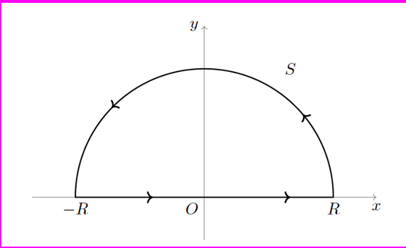
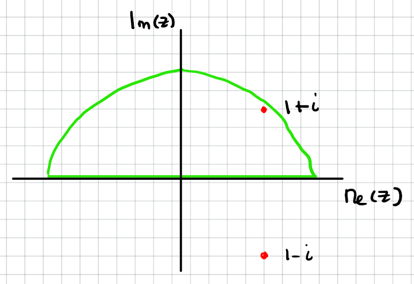
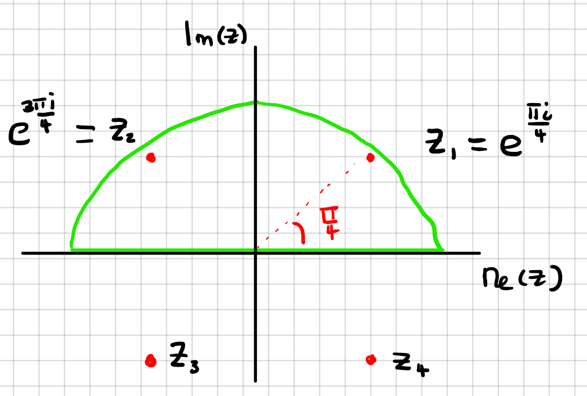

Jonathan Crofts
Nottingham Trent University
It is a quite surprising consequence of complex analysis that many real integrals that arise in science and technology can be solved using the techniques of residue theory
In this course we shall consider integrals of the form
\[ \int_{-\infty}^\infty f(x)\,\mathrm{d}x \]With $f(x)$ a real-valued function
Such an integral is termed an improper integral and has the meaning
\[ \int_{-\infty}^\infty f(x)\,\mathrm{d}x = \lim_{a\to-\infty}\int_a^0 f(x)\,\mathrm{d}x +\lim_{b\to\infty}\int_0^b f(x)\,\mathrm{d}x \]We will further restrict ourselves to functions of the form
\[ f(x)=\frac{P(x)}{Q(x)} \]With $P, Q$ polynomials
We will require $Q(x)$ to have degree at least two units higher than that of $P(x)$ and be such that $Q$ is non-zero for all real values of $x$
Examples of functions satisfying these conditions are
\[ \frac{1}{1+x^2}, \quad\frac{x^2+1}{x^4+1} \quad\text{and}\quad \frac{1}{(x^2-2x+5)^2} \]i.e. rational functions
Now consider the contour integral
\[ \oint_\mathcal{C} f(z)\mathrm{d}z \]where $f$ is the same function as in the integral
\[ \int_{-\infty}^\infty f(x)\mathrm{d}x \]and $\mathcal{C}$ is the contour in the figure
Now
$\bullet ~~f$ is rational
$\bullet ~~$ so has finitely many poles
$\bullet ~~$ for large enough $R$ all poles in the upper half-plane will be contained in $\mathcal{C}$
Thus by the residue theorem we have that
\[ \oint_\mathcal{C}f(z)\mathrm{d}z =\int_\mathcal{S}f(z)\mathrm{d}z+\int_{-R}^R f(x)\mathrm{d}x = 2\pi i\sum_j\mathrm{Res}(f; z_j)~~~~~~~~~~~~~~~~~~~~~~~~~~~~~~~~~~~~~~~~~~~~~~~ \]Here, the sum is over all poles in the upper half-plane
We can rewrite the above as
\[ \int_{-R}^R f(x)\mathrm{d}x = 2\pi i \sum_j \mathrm{Res}(f; z_j)-\int_\mathcal{S}f(z)\mathrm{d}z~~~~~~~~~~~~~~~~~~~~~~~~~~~~~~~~~~~~~~~~~~~~~~~ \]And so in the $R\to\infty$ limit we have
\[ \color{red}{\boxed{\color{white}{ \int_{-\infty}^\infty f(x)\mathrm{d}x = 2\pi i \sum_j \mathrm{Res}(f; z_j)}}}~~~~~~~~~~~~~~~~~~~~~~~~~~~~~~~~~~~~~~~~~~~~~~~ \]To summarise, we can compute real integrals of the form
\[ \int_{-\infty}^\infty f(x)\mathrm{d}x \]With $f(x)=P(x)/Q(x)$ such that $Q$ is non-zero for all real $x$ and is of degree at least 2 greater than the numerator $P$ using the following formula
\[ \color{red}{\boxed{\color{white}{ \int_{-\infty}^\infty f(x)\mathrm{d}x = 2\pi i \sum_j \mathrm{Res}(f; z_j)}}} \]Importantly, the sum is over all poles in the upper half-plane
Hopefully, all this will become clear after we consider some examples...
Show that
\[ \int_{-\infty}^\infty \frac{x}{(x^2-2x+2)^2}\mathrm{d}x = \frac{\pi}{2} \]The function $f(x) = P(x)/Q(x)$ satisfies the conditions required to use the residue theorem since
\[ P(x) = x \quad \text{and}\quad Q(x) = (x^2-2x+2)^2 \]So that $Q$ (fourth order) has degree three units higher than $P$ (first order) and also $Q$ has no real roots
Note that the function $f$ has singularities $z_{1,2}=1\pm i$ both being second order poles and that only one of these lies in the upper half-plane
Thus we can compute the integral as
\[ \int_{-\infty}^\infty \frac{x}{(x^2-2x+2)^2}\, \mathrm{d}z= 2\pi i \mathrm{Res}(f;1+i) \]Thus we need to compute the residue of $f$ at $z_1=1+i:$
\[ \begin{align*} \mathrm{Res}(f;1+i) &=\lim_{z\to 1+i}\left\{\frac{\mathrm{d}}{\mathrm{d}z}\bigg[(z-(1+i))^2f(z)\bigg]\right\}\\ &= \frac{\mathrm{d}}{\mathrm{d}z}\bigg[\frac{z}{(z-(1-i))^2}\bigg]_{z=1+i}\\ &=\bigg[\frac{1}{(z-(1-i))^2}-\frac{2z}{(z-(1-i))^3}\bigg]_{z=1+i} &= \frac{1}{(2i)^2}-\frac{2(1+i)}{(2i)^3} = \color{red}{\boxed{\color{white}{\frac{1}{4i}}}} \end{align*} \]Thus
\[ \int_{-\infty}^\infty \frac{x}{(x^2-2x+2)^2}\, \mathrm{d}z = 2\pi i\frac{1}{4i} = \color{red}{\boxed{\color{white}{\frac{\pi}{2}}}} \]As required
Show that
\[ \int_0^\infty \frac{\mathrm{d}x}{1+x^4} = \frac{\pi}{2\sqrt{2}} \]The function $f(x) = P(x)/Q(x)$ satisfies the conditions required to use the residue theorem since
\[ P(x) = 1 \quad \text{and}\quad Q(x) = 1+x^4 \]So that $Q$ (fourth order) has degree four units higher than $P$ (zeroth order) and also $Q(x)$ has no real roots
Note that the function $f$ has singularities $z_{n}=e^{(2n-1)\pi i/4}, n=1,\ldots 4$ all four being first order poles and that two of these lies in the upper half-plane
Thus we can compute the integral as
\[ \int_{-\infty}^\infty \frac{1}{1+x^4}\, \mathrm{d}z= 2\pi i \bigg(\mathrm{Res}(f;e^{\pi i/4}) + \mathrm{Res}(f;e^{3\pi i/4})\bigg) \]Thus we need to compute the residues of $f$ at $z_1=e^{\pi i/4}$ and $z_2=e^{3\pi i/4}$:
Since $f$ is rational and the poles are first order we have
\[ \mathrm{Res}(f;z_0) = \left.\frac{p}{q'}\right|_{z=z_0} \]In our case
\[ p=1 \quad \text{and}\quad q' = \frac{\mathrm{d}}{\mathrm{d}z}\left(1+z^4\right) = 4z^3 \]Thus
\[ \color{red}{\boxed{\color{white}{ \mathrm{Res}(f; z_1) = \left.\frac{1}{4z^3}\right|_{z=z_1} =\frac{1}{4}e^{-3\pi i/4}=-\frac{1}{4}e^{\pi i/4} \quad\text{and}\quad\mathrm{Res}(f; z_2) = \left.\frac{1}{4z^3}\right|_{z=z_2} =\frac{1}{4}e^{-9\pi i/4}=\frac{1}{4}e^{-\pi i/4}}}} \]Putting this altogether we find that
\[ \begin{align*} \int_{-\infty}^\infty \frac{1}{1+x^4}\, \mathrm{d}z &= 2\pi i \bigg(\mathrm{Res}(f;e^{\pi i/4}) + \mathrm{Res}(f;e^{3\pi i/4})\bigg)\\ &=2\pi i \bigg(-\frac{1}{4}e^{\pi i/4}+\frac{1}{4}e^{-\pi i/4}\bigg)\\ &= -\frac{2\pi i}{4}2i\sin\left(\frac{\pi}{4}\right) = \pi\frac{1}{\sqrt{2}} \end{align*} \]To obtain the final result we note that since the integrand $f=1/(1+x^4)$ is an even function, that
\[ \color{red}{\boxed{\color{white}{ \begin{align*} \int_{0}^\infty \frac{1}{1+x^4}\, \mathrm{d}z &=\frac{1}{2}\int_{-\infty}^\infty \frac{1}{1+x^4}\, \mathrm{d}z\\ &= \frac{\pi}{2\sqrt{2}} \end{align*}}}} \]As required